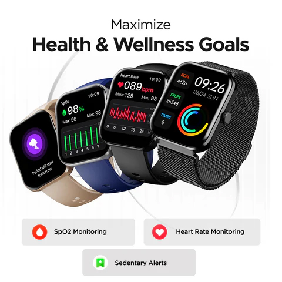
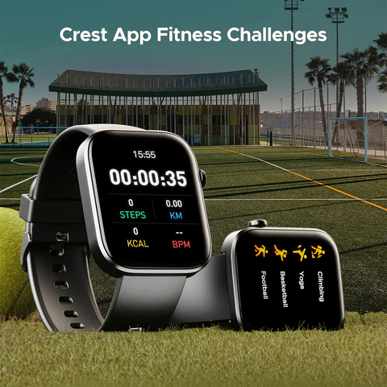
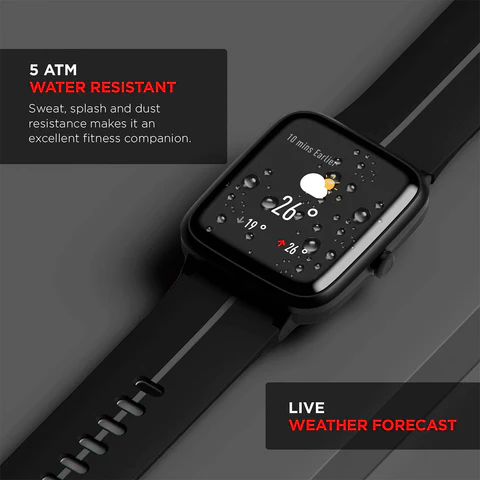

Grand Festive Sale is Live - Get upto 60% OFF!
Shop Now!
Fitting in exercise isn't just a nice-to-have these days; it's a must. It's hard to find time for
exercise routines, keep track of workouts, and even stay motivated when we're busy. Fitness tracker smartwatches are
like having a personal trainer on your wrist. These small tech marvels are no longer just toys; they're important
fitness partners that will help you stay in shape and ahead of the game.
Here are seven ways that fitness tracker smartwatches are changing the way we work out and stay healthy.
Real-time tracking is one of the best things about fitness tracker monitors, no matter if you're wearing a fitness watch for men or for women. These devices give you real-time information about your exercise levels, such as how many steps you've taken and how many calories you've burned. This keeps you informed about your fitness throughout the day. If you know how busy (or inactive) you are, you may be more likely to climb those stairs or do a short workout.
These days' fitness tracker smartwatches are full of sensors that do more than just track fitness. These sensors also help keep an eye on important health metrics. They keep an eye on your heart rate all day and can let you know if something doesn't seem right. This function is very important for people who want to keep their heart healthy, so these watches are not only fitness tools but also health guardians. The best exercise watches can even track your ECG and measure your blood oxygen levels so you can stay informed about your health as a whole.
Being fit isn't just about how much you sweat every day. As important as exercise is recovery and the best fitness bands can track your sleep. These smartwatches keep track of your sleep habits and tell you about your REM, light sleep, and deep sleep cycles. If you know how well you sleep, you can change your routine to make sure you're relaxed and ready for your next workout.
Everyone likes a good fight. Smartwatches that track your fitness often have tasks and goals built in that keep you going. These watches make fitness fun, whether you're trying to close your activity rings or beat your friends to see who can take the most steps. Some of our watches support boAt Crest App, where you can participate in challenges & earn boAt Coins. The people who have trouble staying motivated will find this function very helpful. Setting daily or weekly goals gives you something to work toward and helps you stay on track with your fitness journey.
Our smartwatches provide instant access to essential fitness metrics, allowing you to track your performance in real time. With just a glance, you can monitor your heart rate, pace, distance, and calories burned. This immediate feedback empowers you to make adjustments on the go, helping you stay in control of your workout—whether you're pushing for a new personal best or simply maintaining a steady pace. It’s like having a dashboard of your progress, keeping you informed and motivated throughout your fitness journey.
Fitness tracker smartwatches are made to work with a range of hobbies. They come with modes that let you track your progress in almost any sport, like swimming, running, and yoga. The best fitness watches for both men and women can handle being sweaty, so you don't have to worry about them when you're working out or swimming. This makes sure that your watch is always with you, no matter what kind of exercise you like.
Exercise tracker smartwatches have become the best personal trainers in a world where technology and exercise go hand in hand. They keep an eye on your health, give you workout plans, and give you comments and motivation in real time. It's time to accept that exercise will become smarter in the future. If you want the best fitness tracker or fitness watch to help you stay healthy, make the switch today and stay fit!